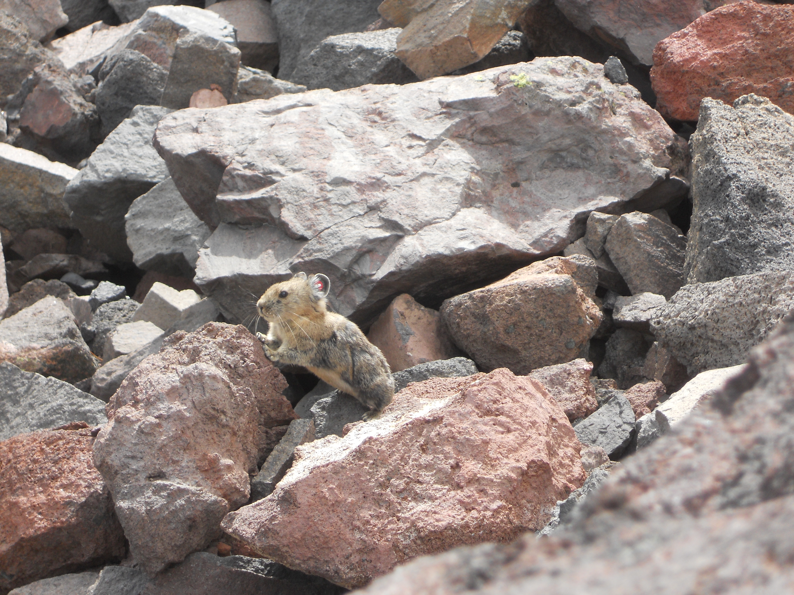

Pika Project


I love pikas! Since high school, I've had the chance to help Chris Ray and April Craighead with three of their annual pika surveys in a canyon outside of Bozeman, MT. I can't imagine a cuter animal than a pika, and I will never be tired of watching them.
I assisted with:
- Behavioral surveys
- Vegetation surveys
- Pika trapping, handling, and sample collection
Read more about the Pika project at the Craighead Institute's website!
